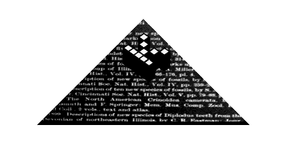

Please also have a look at our blog
kopimi (copyme), symbol showing that you want to be copied. use kopimi in your own fancy. kopimi may be put on homepages or blogs, in books, in software, as sound logos in music or whatever.
1. copy one of these kopimi symbols, or make up your own
2. put it on a homepage
3. link the logotype to: www.kopimi.com/kopimi


|


|
0 0 0 0 0 0 0 0 0 0 0 0 0 0 0
0 0 0 0 0 0 0 a 0 0 0 0 0 0 0
0 0 0 0 0 0 a C a 0 0 0 0 0 0
0 0 0 0 0 a a a a a 0 0 0 0 0
0 0 0 0 a a a a a a a 0 0 0 0
0 0 0 a a a a a a a a a 0 0 0
0 0 0 0 0 0 0 0 0 0 0 0 0 0 0 0 0 0 0
0 0 0 0 0 0 0 K O P I M I 0 0 0 0 0 0
0 0 0 0 0 0 0 0 0 0 0 0 0 0 0 0 0 0 0 0 0
|


The History of Kopimism
Introduction
Kopimism is defined as a philosophical belief that all information ought to be freely distributed and that no monopoly on knowledge should ever persist, especially not by the means of state regulation ? by copyright laws, intellectual property regulation, or otherwise. The movement is an outflowing of the Free Culture Movement, and exists largely as an internet phenomenon and is closely related to the Swedish political party: The Pirate Party. However, the ideology has been officially recognized in Sweden as a religion, though it lacks any deities and features no theological dogmas.
The Origin of Kopimism
The history of this movement must be understood as an antithetical response to "copyright activism." In 2001, a group calling itself the Anti-piracy Bureau (Antipiratbyrån) formed with the intent of assisting those in the Swedish film and gaming industry with the legality of copyright infringement. The organization proved highly successful in prosecuting copyright infringement cases and offering representation to those who requested legal assistance. The group is backed and funded by large corporations such as Sony, Twentieth Century Fox, and the Walt-Disney corporation. In 2003, in response to the aforementioned group, the Piracy Bureau was formed (known in Swedish as Piratbyrån, which was meant as a comical take on Antipiratbyrån by directly "copying" the original name, but merely removing "anti" from the copyrighted label). The organization functioned largely as a think tank, and would often be featured in Swedish radio and television debates, and recurrently organized events centered around anti-copyright lecturers. Jonas Andersson, a Swedish file-sharing researcher defines the group this way: "it is... a loosely organized think-tank, a website, a philosophical greenhouse or FAQ guide to digitization." Later in 2003, Piratbyrån created the website The Pirate Bay, which rapidly became the world's most visited file-sharing (torrent) site.
"Kopimi" name origin
Two years later, in 2005, Ibrahim Botani, a figurehead in the Piratbyrån community, designed an "un-copyright logo" called "Kopimi" (pronounced "Copy Me"). The intent of the design was meant as a sort of advertisement for permission to re-use information or products and became the calling card brand of the Piratbyrån community. This design name would later prove to be the etymology for the "Missionary Church of Kopimism," and the philosophical ideology of Kopimism. Also in 2005, the domain name kopimi.com was formed by Piratbyrån.  A year later in 2006, Kopimism began to garner recognition as a political entity in the arena of anti-copyright activism, especially with the formation of the Sweden Pirate Party ? a political party geared around the legislative intent of copyright and patent reform, and bankrolled many pro-internet groups. This party now exists in 40 countries, and even has two seats in the European parliament. Five years after his development of the Kopimi logo, Botani died, and the Piratbyrån organization agreed to dissolve ? though a thriving community built around the Pirate Bay website, and the Swedish Pirate Party, still exists and still espouses the kopimist ideology.
A year later in 2006, Kopimism began to garner recognition as a political entity in the arena of anti-copyright activism, especially with the formation of the Sweden Pirate Party ? a political party geared around the legislative intent of copyright and patent reform, and bankrolled many pro-internet groups. This party now exists in 40 countries, and even has two seats in the European parliament. Five years after his development of the Kopimi logo, Botani died, and the Piratbyrån organization agreed to dissolve ? though a thriving community built around the Pirate Bay website, and the Swedish Pirate Party, still exists and still espouses the kopimist ideology.
The Missionary Church of Kopimism
In 2010, The Missionary Church of Kopimism, an antecedent group to the Piratbyrån group and their goals, became an officially recognized religion by Swedish authorities ? which has catalyzed a riveting global conversation on the nature of intellectual property and state-recognized religion. In conventional terms, the organization is entirely nonreligious, and holds to no theological tenets ? though it has adopted a few applicable credos from the New Testament, such as a re-application of 1 Corinthians 11:1, "imitate me, just as I imitate Christ" (which was later reshaped into the Kopimist slogan: "Copy me, my brother, just as I copy Christ himself." The Kopimi Church also features Botani's logo, and claims that the Ctrl+C, and Ctrl+V keyboard functions are sacred *("Copy and Paste what thou wilt shall be the whole of the law" being an official Kopimist creed), and also asserts that the act of file-sharing is akin to that of a religious service, or a sacrament. Otherwise, the Church describes itself as a "non-theistic, non-exclusionary religion based on the idea that copying (and sharing) information is a sacred virtue." Other official tenants, as explained on the Missionary Church of Kopimism website, include the idea that "all people should have access to all information produced," and claims that "all communication is sacred. Communication needs to be respected." Other official tenets are: "* All knowledge to all." "* The search for knowledge is sacred." "* The circulation of knowledge is sacred." "* The act of copying is sacred." The church website even defines sin: "It is a direct sin to monitor and eavesdrop on people...absolute secrecy is holy in the church of kopimism." And if that weren't enough to convince one of this Church's zeal, and earnestness, the church encourages its advocates to maintain courage in the face of their oppressors: "We challenge all copyright believers ? most of which have a great deal of influence in politics, and who derive their power by limiting people?s lives and freedom. What they most of all want to limit the knowledge. We need to steel ourselves for their hatred and aggression." Other creeds found on the site are: "Copy. Download, upload!" "All knowledge to all!" and "Information technology is not to be feathered by law." Otherwise, the site touts the act of file-sharing as the meditative ritual which the group often performs during physical meetups or online gatherings. On April 28th, 2012, in Belgrade, Serbia, the Church even performed its first wedding. Performed by a Kopimist Priest in a Guy Fawkes mask, the ceremony featured a computer reading official church beliefs and marital vows. In response to the wedding the church released this statement: "We are very happy today. Love is all about sharing. A married couple shares everything with each other. Hopefully, they will copy and remix some DNA-cells and create a new human being. That is the spirit of Kopimism. Feel the love and share that information. Copy all of its holiness." U.S. News reported in their 2012 article, "Kopimism, Sweden's Pirate Religion, Begins to Plunder America," that 3,500 people liked Kopimism on Facebook, and that the religion is now practiced in official branches in 18 countries. One of those branches is located in the United States and is headed up by the 25-year-old University of Chicago student Christopher Carmean who said of his newfound religion that "Data is what we are made of, data is what defines our life, and data is how we express ourselves.... Forms of copying, remixing and sharing enhance the quality of life for all who have access to them. Attempts to hinder sharing are antithetical to our data-driven existence." The U.S. Branch currently maintains about 450 actively registered members, and about 30 actively participating members.
The Founder
The church was founded by Isak Gerson, a young Swedish philosophy student. Isak Gerson was an active member of the Swedish Pirate Party ? managing many of their local election campaigns, and was fully participatory member of the Young Pirates Association (the "youth" wing of Sweden's Pirate Party). In his New Yorker article, "The First Church of Pirate Bay," Rolling Romig reported Gerson's explanation of the philosophical tenets of the church's mission: "We see the world as built on copies... We often talk about originality; we don?t believe there?s any such thing. It?s certainly that way with life ? most parts of the world, from DNA to manufacturing, are built by copying... You use other people?s works to make something better." Romig's article, which was published in 2012 around the same time as the Gerson's new "religion" became officially recognized in Sweden, also reported on one of the driving reasons for the foundation of "Kopimism" which was mainly contempt from an anti-copyright activist lawyer who once responded to an email by stating that those associated with the Pirate Bay phenomena were "just a few people, very loud. They're a cult. They call themselves Kopimists." This seemingly innocuous comment made in an email by an M.P.A.A. lawyer was later discussed at infamy on anti-copyright internet forums, and amongst many would-be "kopimists." It was that email, which equated kopimism with cult-like tendencies, that first sparked the then 19-year old Gerson to ponder about the potentially to turn anti-copyright activism into a bona fide religious denomination. So, though it took Gerson three attempts, he applied for state recognition and finally received it on January 5th, 2012. However, Gerson later acknowledged that the official recognition of the Swedish state provides the organization with no real benefits, as Sweden does not grant very many legal exemptions to recognized religions, and added that the primary purpose behind the registration was to "strengthen our identity. I think it will be easier to find new members now that we?re recognized." Overall, Gerson's sincerity is hard to deny. Perhaps his most famous quotation, and one repeatedly exclaimed by many kopimist almost as if a creed was, "Copy me! I encourage reckless and inconsiderate COPYING that denies all consideration of copyright and similar bullshit."
Criticism from the Media
The church has experienced some criticism from the media. While the Church has officially stated that it does not support illegal file sharing, its close ties to torrent sites like The Pirate Bay have made that proclamation a difficult one to maintain. The church was even decried by some public intellectuals as unethical for its association with Pirate Bay, though that relationship is really a difficult one to establish. Gerson has denied any affiliation with the Pirate Bay website or the Pirate party, and in 2012 Lauren Pespisa, a Kopimist member stated that Gerson "doesn't like to officially associate with the Pirate party, so it's an unofficial association." Overall, however, his association with the "Pirate" movement has left many doubting the formation of the Church as legitimate. Others claim that the application for state recognition was an activist prank or a "parody religion." But, Gerson has always maintained that the motivation behind the church has, from the beginning, been sincere stating that, "I don't think it's a joke at all... I think that many religions have been ridiculed over the years. I don't think we're the first to experience it." Also, in the New Scientist interview article "Kopimism: the world's newest religion explained," Gerson stated that "Information is the building block of everything around me and everything I believe in. Copying it is a way of multiplying the value of information.... We have had this faith for several years and one day we thought, why not try and get it registered? It was quite difficult. The authorities were quite dogmatic with their formalities. It took us three tries and more than a year to get recognized." In fact, Romig, after interviewing Gerson stated in his New Yorker article that "When Gerson talks about Kopimism as a religion, his tone is good-humored, but he also comes off as disarmingly sincere. Even if this religious-registration business is just a bit of political theatre, there?s no doubt that there?s an honestly and deeply held conviction at its core: the free exchange of information as a fundamental right."
Conclusion ? The Movement of Kopimism
All-in-all, for those that would consider the movement of Kopimism as just another Spaghetti-monster religion (the parody religion formed in 2005) will be hard-put to deny the sincerity of its founder, and its adherents. It remains to be seen how this religion will develop in the coming years ? and, for that matter, how the founder will develop as he graduates from his 20's ? but, at the very least, this movement has generated many thought-provoking questions in the realm of intellectual property, political activism, and the relationship between the state and religions.
Please also have a look at our blog